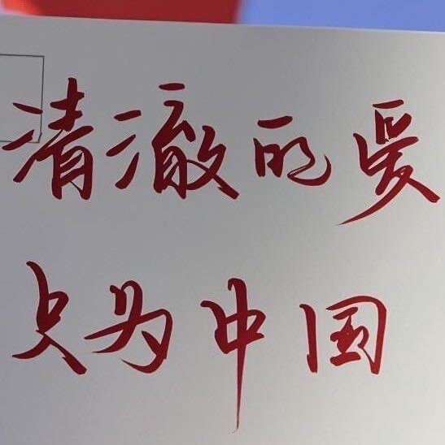

iOS 原生与跨平台
Swift、Objective-C、SwiftUI、UIKit、Flutter；适合从 MVP 到复杂业务的架构与核心模块。
Independent iOS / AI builder
我是张晓檬，10+ 年 iOS 工程经验。现在专注 AI 原生产品、App 出海和从 0 到 1 的上架交付。
从需求收敛、架构与核心代码，到性能、订阅、归因和 App Store 资料，我更关注产品能不能真正跑起来、卖出去。

What I do
把复杂问题拆成可以执行的工程节点：先冻结范围，再验证核心链路，最后把商业化和发布所需的细节补齐。
Swift、Objective-C、SwiftUI、UIKit、Flutter；适合从 MVP 到复杂业务的架构与核心模块。
StoreKit、订阅、AdMob、Firebase、AppsFlyer、Adjust；覆盖支付、归因、远程配置和多语言。
Photos、AVFoundation、Vision、GPUImage、GLSL、MediaPipe；处理扫描、视频、实时渲染与内存问题。
用 Claude Code、Codex、Cursor、Trae 构建带编译、测试和 Review 闭环的 AI 开发流程。
Selected work
下面是最能代表工作方式的几类项目：效率工具、AI 社交、图像算法和 AI 辅助研发。
智能手机清理工具。用 Vision + pHash 做相似照片识别，以批量加载、并发扫描和双级缓存把 10,000 张照片的扫描从约 5 分钟压到约 1.5 分钟，峰值内存从约 500MB 降到约 150MB。
面向海外市场的 AI 伴侣社交 App。负责实时消息、异步生成状态机、本地数据库、VIP 内购与国际化，支持 27 种语言。
一类做实时美型和 GPU 渲染，一类做摄像头 PPG 健康追踪。核心工作涉及 GLSL、MediaPipe、视频处理、滤波和信号分析。
独立完成策划、开发、上架和迭代的工具产品。X 长截图累计下载 10 万+、使用 52 万+；X 自主聚焦离线记录、拼接与提醒。
基于 Claude Code / Codex 的任务队列与三级验证流程：xcodebuild 编译、功能测试、AI 代码 Review；复杂方案由人设计，标准化实现交给 AI 批量执行。
把个人成长记录、反思和行动拆成可持续的产品体验。它和 iOS 服务页、七日执行计划一起，构成我当前的公开实验场。
打开 Life Coach →Career / Practice
经历过大团队、出海产品和个人产品之后，我现在把注意力放在“能验证、能上线、能持续迭代”的小团队产品上。
参与 AI 社交、AI 影像、健康追踪和工具效率等方向的海外 App，从需求、架构、核心算法到商业化与上架交付。
独立开发 X 长截图、X 自主；持续实践 SwiftUI、鸿蒙和 AI 编程工具，并把开发过程沉淀成公开内容。
负责 App 与 Flutter 方向的需求分析、框架搭建和核心开发；从 0 到 1 建设 AB 实验 SDK 与日志处理方案。
负责移动端产品的 iOS 开发维护，并参与需求、H5 与安卓协作排期。
Contact
合作前请尽量带上产品目标、当前进度和一个具体阻塞点；信息越具体，越容易快速判断适合哪一档服务。
把 iOS 工程、AI 工具和产品实践写成可以复用的公开记录。